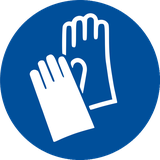
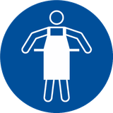
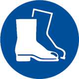

Quitar la ropa y los zapatos contaminados, aclarar la piel o duchar al afectado si procede
con abundante agua fría y jabón neutro. En caso de afección importante acudir al médico. Si el
producto produce quemaduras o congelación, no se debe quitar la ropa debido a que podría
empeorar la lesión producida si esta se encuentra pegada a la piel. En el caso de formarse
ampollas en la piel, éstas nunca deben reventarse ya que aumentaría el riesgo de infección.
Por inhalación
Sacar al afectado del lugar de exposición, suministrarle aire limpio y mantenerlo en reposo.
En casos graves como parada cardiorrespiratoria, se aplicarán técnicas de respiración
artificial (respiración boca a boca, masaje cardíaco, suministro de oxígeno, etc.) requiriendo
asistencia médica inmediata.
Por contacto con los ojos
Enjuagar los ojos con abundante agua a temperatura ambiente al menos durante 15 minutos.
Evitar que el afectado se frote o cierre los ojos. En el caso de que el accidentado use lentes
de contacto, éstas deben retirarse siempre que no estén pegadas a los ojos, de otro modo podría
producirse un daño adicional.
En todos los casos, después del lavado, se debe acudir al médico lo
más rápidamente posible.
Por ingestión / aspiración
Requerir asistencia médica inmediata, mostrándole la FDS de este producto.
No inducir al vómito, porque su expulsión del estómago puede provocar daños en la mucosa
del tracto digestivo superior, y su aspiración, al respiratorio.
Enjuagar la boca y la garganta, ya que existe la posibilidad de que
hayan sido afectadas en la ingestión. En el caso de pérdida de consciencia no administrar
nada por vía oral hasta la supervisión del médico. Mantener al afectado en reposo.
Información importante
Molienda y ensilaje · trabajo con ácido fórmico
Protección obligatoria de las vías respiratorias

Uso obligatorio de guantes

Protección obligatoria del cuerpo

Protección obligatoria de los pies
Antes de empezar
Vestir la ropa y elementos de seguridad proporcionados: traje anti ácido, guantes y
botas de goma; para el ensilaje con ácido, además mascarilla y lentes.
Molienda
Revisar que la máquina esté armada y con todas sus piezas en buen estado.
Introducir los peces con la máquina apagada.
Cerrar todas las puertas de seguridad y encender la máquina.
Esperar a que termine y apagarla. ¡Nunca manipular la máquina encendida!
Retirar el contenedor con la molienda y verterla en el bidón designado de ensilaje.
Limpiar la máquina, retirar todos los restos y verterlos al bidón de ensilaje.
Agregar ácido fórmico: 1 litro por cada 4 kg de mortalidad molida.
Medición de pH
Antes de verter la molienda del día, medir con el medidor de pH en papel y registrar
el número. El pH debe ser inferior a 4,0; si no lo es, verter más ácido.
Cuando el tambor esté en 4/5 partes, cerrarlo y sellarlo, y seguir con el tambor del
siguiente número correlativo.
Precauciones
Utilizar siempre todos los implementos de seguridad, no manipular la máquina de molienda
mientras esté encendida, no derramar ácido, mantener siempre el orden y la limpieza, y
desinfectar todas las herramientas.
Molienda y Ensilaje
en línea
Pendientes 0Sin tambor abiertoÁcido —⚠️ Seguridad🚑 Primeros auxilios · 131
—
Tambor abierto
0
kg acumulados
capacidad —
0 kg
hoy · sin cargas registradas
Cargas de hoy
—
Se cerrará y sellará
Al cerrarlo dejará de recibir cargas. La próxima carga irá al tambor del siguiente número
correlativo. Si el tambor sí recibió esta molienda, no uses esta pantalla: marca
«cerré el tambor con esta carga» al registrarla.